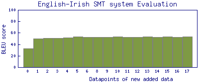
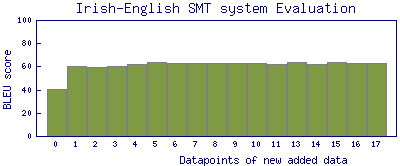

IRIS
Córas Aistriúcháin Béarla-Gaeilge
Baile
Béarla
Maidir le
Foireann
Docker
Tionscadail Eile
IRIS
OTTO
ASISTENT
TeTra
Cuir an téacs le haistriú, Béarla nó Gaeilge, sa bhosca nó bain úsáid as na samplaí:
This service is brought to you by
http://nuig.insight-centre.org/unlp/
Forbraíodh an Córas Aistriúcháin IRIS chun téacs i mBéarla a aistriú go Gaeilge agus a mhalairt.
Select translation table option/approach:
Phrase-based SMT
Neural MT
Statistics about added monolingual/parallel data:

